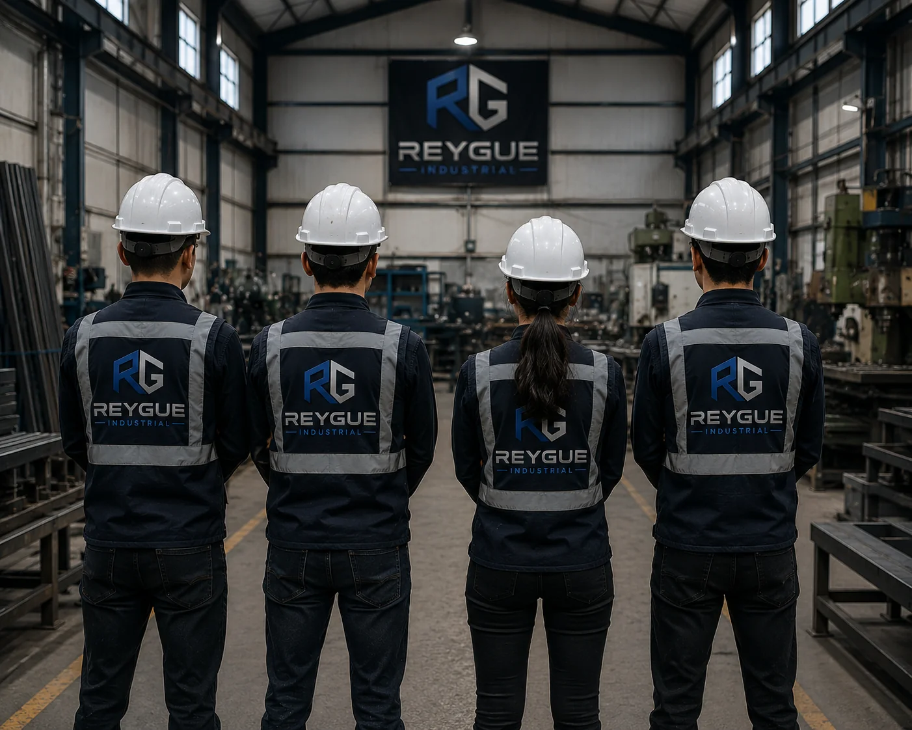
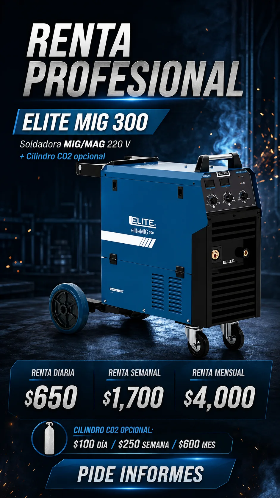

Flechas, pernos, bujes, husillos, engranes y componentes mecánicos especiales.
PlanoMuestraCroquis

Diseñamos, fabricamos, reparamos y desarrollamos soluciones industriales adaptadas a las necesidades de cada proyecto.
Grupo REYGUE Industrial está enfocado en desarrollar soluciones mediante maquinado, soldadura, fabricación y mantenimiento, trabajando con precisión, calidad y compromiso.
No buscamos aparentar una escala que no corresponde. Nuestra propuesta es combinar capacidad técnica, atención directa y una red de aliados cuando un proyecto requiere procesos complementarios.

En Grupo REYGUE Industrial ofrecemos servicios de fabricación, maquinado, reparación y recuperación de piezas de acuerdo con planos, dibujos, muestras o necesidades específicas del cliente.
Nuestro objetivo es brindar soluciones prácticas y a la medida, ya sea para fabricar una pieza nueva, reparar un componente existente o apoyar en necesidades de mantenimiento y producción.
Flechas, pernos, bujes, husillos, engranes y componentes mecánicos especiales.
Componentes desgastados, piezas mecánicas, reductores y elementos utilizados en maquinaria.
Tratamientos térmicos, recubrimientos de poliuretano y procesos especializados según requerimiento.
Baleros, poleas, chumaceras, sprockets, coples y otros componentes comerciales.
Una selección de proyectos reales que muestra componentes de torno, engranes, ejes, bujes, husillos y sistemas de transmisión.
El sitio está organizado para que un cliente entienda rápidamente qué podemos analizar, fabricar, reparar o desarrollar.
Torneado y fresado para piezas unitarias, series cortas, reparaciones, modificaciones y prototipos.
Conocer capacidad →Procesos MIG, TIG y MMA aplicados a fabricación, reparación, ensamble y modificación.
Conocer capacidad →Bases, bastidores, carros, mesas, racks, soportes y estructuras pequeñas a la medida.
Conocer capacidad →Soluciones mecánicas correctivas: recuperación, reemplazos, adecuaciones y refuerzos.
Conocer capacidad →Análisis, conceptualización, diseño, selección de materiales y desarrollo de soluciones fabricables.
Conocer capacidad →División secundaria para soldadoras, cortadoras, herramienta y maquinaria ligera.
Ver renta →Un proceso simple para transformar una necesidad industrial en una propuesta clara y fabricable.
Plano, muestra, fotografías, croquis o explicación.
Función, material, geometría, proceso y restricciones.
Definimos una ruta técnica adecuada al trabajo.
Alcance, proceso y condiciones antes de fabricar.
Ejecución y seguimiento del trabajo acordado.
Resultado final y observaciones relevantes.
Cuando un proyecto requiere procesos CNC, ampliamos nuestra capacidad mediante aliados estratégicos especializados, manteniendo el seguimiento y los criterios de calidad definidos para cada proyecto.
La web comunica claramente qué procesos se realizan directamente y cuáles se atienden mediante colaboración. Eso permite crecer sin perder credibilidad.
Cómo trabajamos CNC →El portafolio ya integra trabajos reales de maquinado realizados por REYGUE: ejes, flechas, bujes, husillos, engranes, sinfines y recuperación de componentes. Las demás categorías permanecen preparadas para crecer con nuevos proyectos.
Piezas unitarias, reparaciones, modificaciones y prototipos.
Soportería, bastidores, estructuras pequeñas y soluciones especiales.
La renta de maquinaria deja de ser el centro de la marca y se convierte en una línea complementaria. La Elite MIG 300 conserva su calculadora de renta diaria, semanal, mensual y cilindro CO2.

Comparte fotografías, un plano, un croquis o simplemente explica tu necesidad. REYGUE puede ayudarte a analizar el siguiente paso.